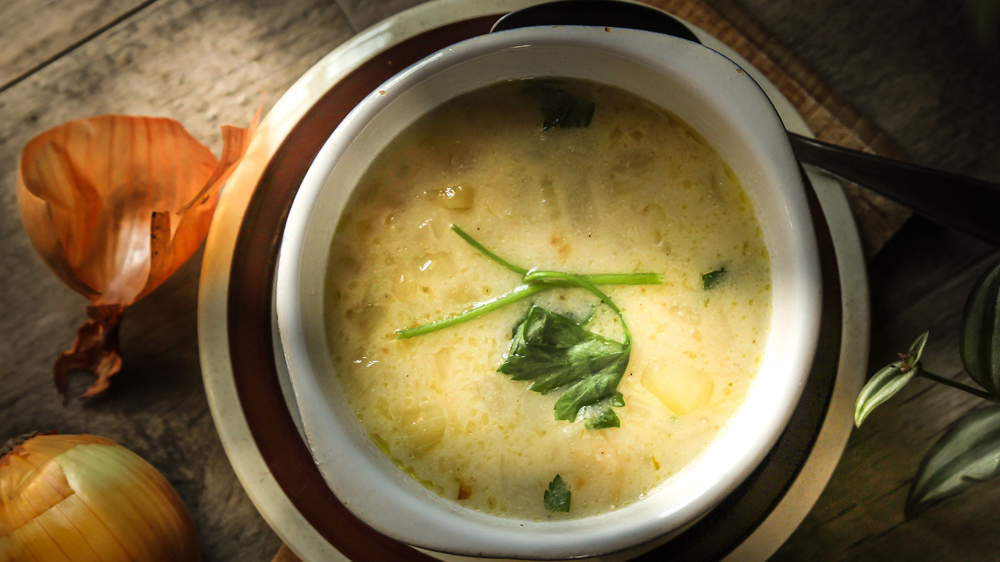
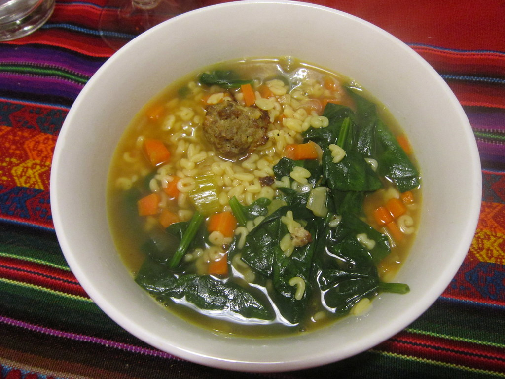
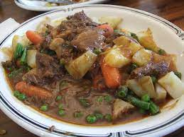
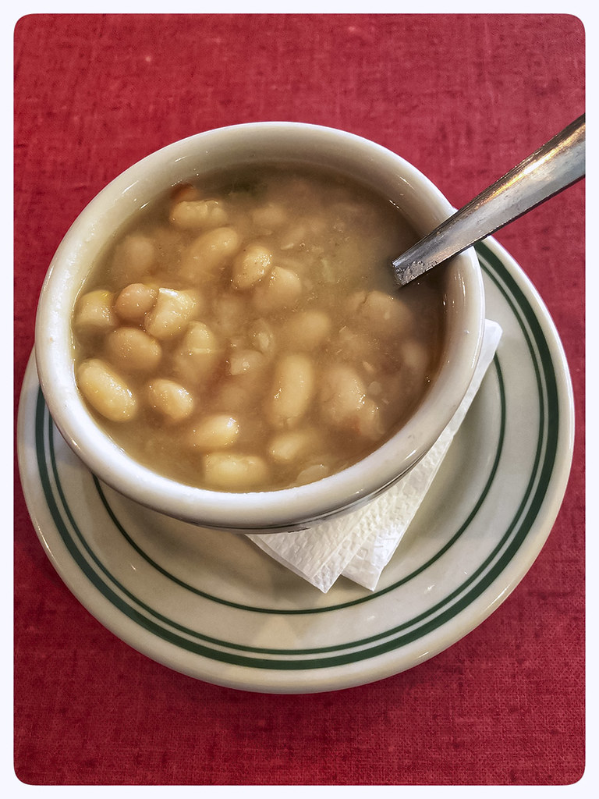
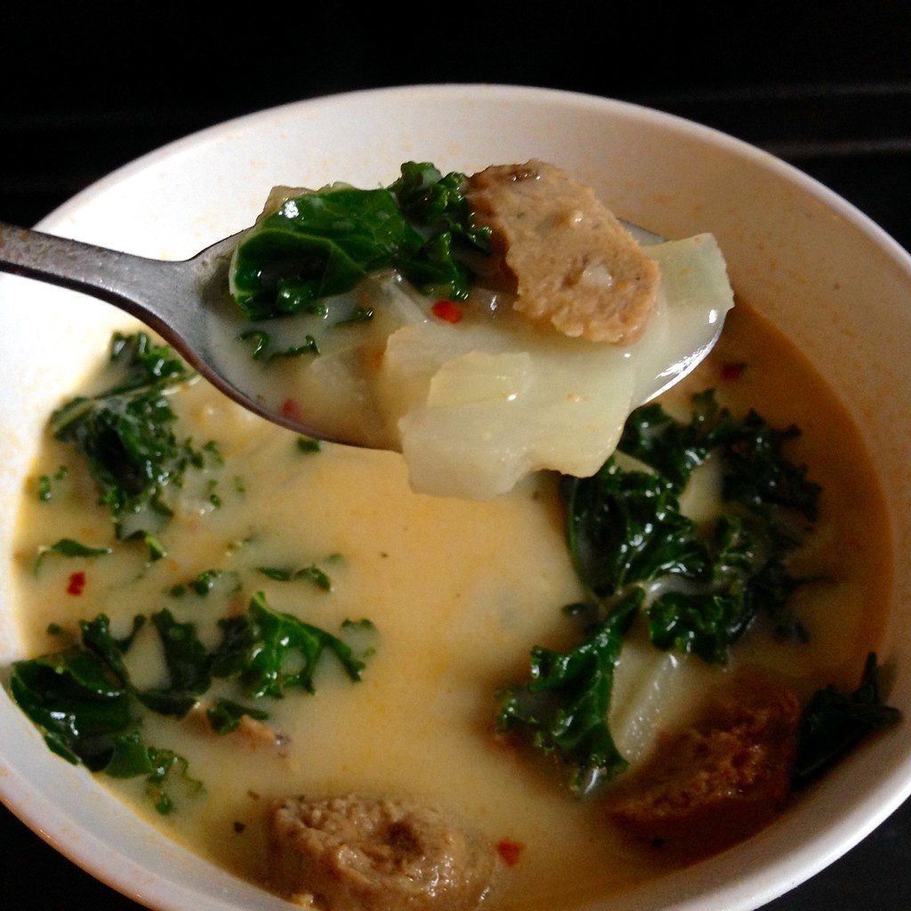

Ever since I was little, I have loved to be in the kitchen–whetherthat was helping my mom make dinner, baking pumpkin rolls to sell for fundraising money in high school, or now where I always end up making too much food for someone who lives alone, which leads to providing my closest friends with free meals.
While I tend to favor baking more than cooking, one of my favorite dishes to make is soup. That’s right, soup. There are so many varieties and ingredients for soup that you and your tastebuds will never get bored. The only downside to being a soup lover is it’s not really an all-year-round kind of food (but I eat it all year anyway).
My top 3 favorite soups to make are:
Potato Soup
When I was younger, I got into really liking The Lord of the Rings and The Hobbit. Combine that with my love of baking and you can imagine how obsessed I was with finding a recipe for elvish lembas bread. While I did end up finding a few recipes for that, I also stumbled upon an entire website with a whole bunch of LOTR inspired recipes. One of those recipes was for potato soup, made in light of the Hobbit Sam’s potato spiel.
"Po-ta-toes! Boil them, mash them, stick them in a stew." --Samwise Gamgee in The Lord of the Rings: The Two Towers
In this recipe, it utilizes more of an herb-y and creamy taste rather than the usual cheesy and bacon-y taste. I don’t eat pork and I’m not the biggest fan of cheese in soups so this was perfect. Since I have found this recipe, I have probably made it at least 50 times. It’s very easy to make, doesn’t require too many ingredients, and it doesn’t take a super long time to make (if you want to speed up the cooking process a bit, you can also make it in a pressure cooker/ Instant Pot instead of on the stove).
You can find the recipe here:
Potato SoupItalian Wedding Soup
Have you ever heard of a canned soup called “Chickarina Soup”? This was a soup that was kind of a combination of chicken noodle soup and classic Italian wedding soup, having all the elements of chicken noodle soup (except the noodles were changed to the little ball noodles) while also including little meatballs. It was my favorite canned soup growing up. Unfortunately, at some point years ago, it seems to have been discontinued for a time (with only a couple brands making it then I believe) so I was left soup-less for a while. Then it popped back up under the Progresso brand but with a different taste than I remember. It seems this soup will only exist as it was in my dreams and memories. Sad.
However, that inspired me to find a similar soup that I liked nearly as much, and was fairly quick and simple to make. Pulling up Pinterest, I searched and searched and finally found a recipe I wanted to try. I found this recipe probably a little over a year ago and have made it a handful of times. It is always good, and you can play with the ratios of the ingredients per what you like or substitute certain items and it will still come out great!
You can find the recipe here:
Italian Wedding SoupBeef Stew
Last up on our list here (but definitely not the least) is a simple beef stew. You can never go wrong with beef, vegetables, and savory broth to tie it all together. Also found through Pinterest, this recipe has all the classic soup vegetables like carrots, celery, onions, peas, potatoes, and garlic, as well as a few herbs like thyme and bay leaf. I do have to admit that the start of this recipe can produce quite a lot of smoke, so best to sear the beef chunks outside, or in a well-ventilated area. This stew is so filling and can last me around a little under a week when portioned out. You can really taste the sear on the beef in the end, and the broth is probably my favorite part. I highly recommend trying to make this, but be careful when cooking the beef!
You can find the recipe here:
Vegetable Beef SoupSummary
I would like to give an honorable mention to Soup Beans and copycat Zuppa Toscana. If interested in those, you can find those here:
Soup Beans
Copycat Zuppa Toscana
